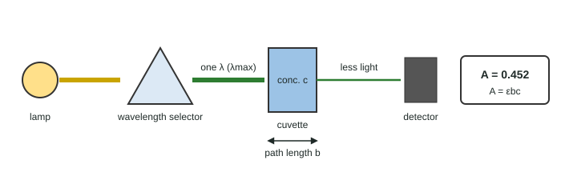

Beer-Lambert Law
A spectrophotometer measures how much light of one wavelength a solution absorbs.
Part 1 · Hook
Why this matters
Part 2 · Before you start
What this builds on
Part 3 · Prerequisite check
Quick check before you start
1. What is the molarity of 0.0200 mol of solute in 0.500 L of solution?
- 0.0400 M
- 0.0100 M
- 25.0 M
Show the answer
0.0200 mol ÷ 0.500 L = 0.0400 M.
- Correct: 0.0400 M:
- 0.0100 M:
- 25.0 M:
2. A solution looks blue. Which light does it absorb most?
- Orange-red
- Blue
- None
Show the answer
We see the light that is not absorbed.
- Correct: Orange-red:
- Blue:
- None:
Part 4 · See it
See it first

Part 5 · Step by step
How it works, step by step
- Each absorbing particle in the beam can absorb a photon of matching energymore particles in the path absorb more light
- Doubling the concentration or the path length doubles the particles in the beamabsorbance is proportional to both: A = εbc
- ε is largest at λmaxmeasurements there are most sensitive to concentration
- Standards of known concentration fall on a straight line of A against can unknown's absorbance on that line gives its concentration
Part 6 · Key ideas
Key ideas
Part 7 · Misconception
A common mistake
The wrong idea: A solution that absorbs more light must have a larger molar absorptivity.
What actually happens: ε is fixed for a substance at one wavelength. More absorbance at the same wavelength and path length means a higher concentration.
Part 8 · Check yourself
Check yourself
Exam-style questions. Anything you miss goes into your review queue.
Graph
Calibration curve for a blue food dye
A student measures five standard solutions of a blue dye at 630 nm in 1.00 cm cuvettes after zeroing the instrument with water. A diluted sports drink gives an absorbance of 0.565.
Data table
| Dye concentration (× 10⁻⁵ M) | Standards |
|---|---|
| 0 | 0 |
| 2 | 0.229 |
| 4 | 0.45 |
| 6 | 0.681 |
| 8 | 0.902 |
| 10 | 1.131 |
1. Use the calibration curve to find the dye concentration in the diluted drink, in units of 10⁻⁵ M (for example, 3.00 means 3.00 × 10⁻⁵ M).
Type a number in × 10⁻⁵ M.
Show the answer
The line passes through the origin with slope 1.131 / 10.0 = 0.1131 per 10⁻⁵ M. c = 0.565 / 0.1131 = 4.996, so 5.00 × 10⁻⁵ M.
- Answer: 5.00 × 10⁻⁵ M
2. The slope of the line equals εb. With b = 1.00 cm, what is the molar absorptivity of the dye?
Type a number in L/(mol·cm).
Show the answer
Slope = ΔA/Δc = 1.131 / (1.00 × 10⁻⁴ M) = 11,310 M⁻¹. ε = slope / b = 11,310 M⁻¹ / 1.00 cm = 1.13 × 10⁴ L/(mol·cm).
- Answer: 1.13e+4 L/(mol·cm)
3. Before measuring the drink, the student touches the clear faces of its cuvette, leaving fingerprints. How does this affect the concentration she reports?
- Too high, because the fingerprints absorb or scatter light and raise the absorbance.
- Too low, because the fingerprints let more light reach the detector.
- No effect, because the fingerprints are outside the cuvette and not in the solution.
- Too low, because fingerprints raise the path length b of the cuvette.
Show the answer
Any light lost at the cuvette walls is counted as absorbed by the sample. A higher absorbance read on the calibration line gives a higher concentration.
- Correct: Too high, because the fingerprints absorb or scatter light and raise the absorbance.: Right: extra absorbance, higher concentration.
- Too low, because the fingerprints let more light reach the detector.: Fingerprints block or scatter light; they do not let more through.
- No effect, because the fingerprints are outside the cuvette and not in the solution.: The beam passes through the walls, so anything on them affects the reading.
- Too low, because fingerprints raise the path length b of the cuvette.: Path length is the inside width, which does not change.
4. The drink was diluted by mixing 10.0 mL of it with water to a total of 50.0 mL. What was the dye concentration in the undiluted drink?
- 1.00 × 10⁻⁵ M
- 5.00 × 10⁻⁵ M
- 6.25 × 10⁻⁵ M
- 2.50 × 10⁻⁴ M
Show the answer
The diluted solution is 5.00 × 10⁻⁵ M. The dilution factor is 50.0 / 10.0 = 5.00, so the original is 5.00 × 5.00 × 10⁻⁵ M = 2.50 × 10⁻⁴ M (M₁V₁ = M₂V₂).
- 1.00 × 10⁻⁵ M: This divides by the dilution factor instead of multiplying.
- 5.00 × 10⁻⁵ M: This is the diluted concentration, not the original.
- 6.25 × 10⁻⁵ M: This used the 40.0 mL of water added as V₁ (50.0/40.0); the volume of drink taken was 10.0 mL.
- Correct: 2.50 × 10⁻⁴ M: Right: multiply back by the dilution factor.
Data table
Measuring copper(II) ions
Copper(II) solutions absorb strongly at 810 nm. A student measures three samples with a spectrophotometer.
| Sample | Concentration (M) | Path length (cm) | Absorbance |
|---|---|---|---|
| 1 | 0.0500 | 1.00 | 0.592 |
| 2 | 0.1000 | 1.00 | ? |
| 3 | 0.0500 | 2.00 | ? |
5. What absorbance should sample 2 give?
- 0.296
- 0.592
- 1.18
- 2.37
Show the answer
A is proportional to c. Doubling c from 0.0500 to 0.1000 M doubles A: 2 × 0.592 = 1.184, so 1.18.
- 0.296: This halves instead of doubling.
- 0.592: This ignores the change in concentration.
- Correct: 1.18: Right: twice the concentration, twice the absorbance.
- 2.37: This quadruples; A is proportional to c, not c².
6. What absorbance should sample 3 give?
- 0.0592
- 0.296
- 0.592
- 1.18
Show the answer
A is proportional to the path length b. Same concentration as sample 1 but twice the path: 2 × 0.592 = 1.18.
- 0.0592: This divides by 10 for no reason.
- 0.296: A longer path increases A; it does not halve it.
- 0.592: A longer path passes more absorbing ions, so A rises.
- Correct: 1.18: Right: twice the path, twice the absorbance.
7. In A = εbc, what does b stand for?
- The path length of light through the sample
- The molar absorptivity of the substance
- The concentration in mol/L
- The wavelength of the light used
Show the answer
b is the path length, the distance light travels through the solution, usually 1.00 cm.
- Correct: The path length of light through the sample: Right: usually 1.00 cm.
- The molar absorptivity of the substance: That is ε.
- The concentration in mol/L: That is c.
- The wavelength of the light used: The wavelength is chosen (λmax) but is not a variable in the equation.
Part 9 · Summary
Summary
Part 10 · Up next
What comes next
Part 11 · Connections